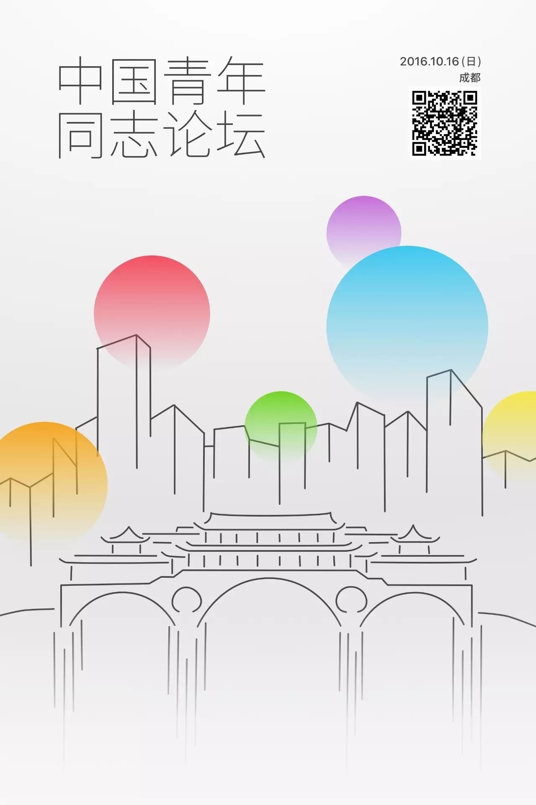
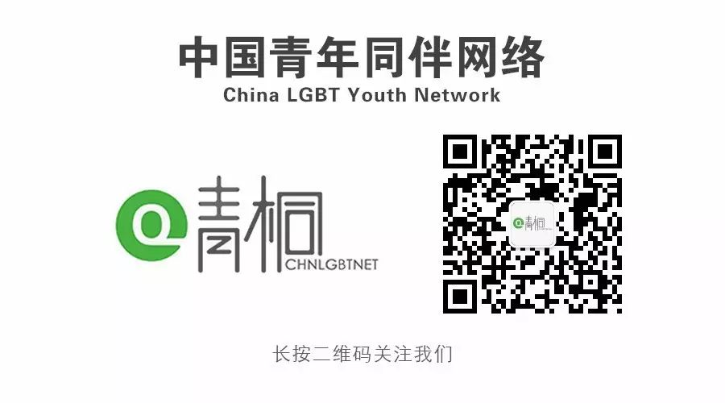

中国青年同志论坛开放注册丨让荧弱的青年之光汇聚成璀璨的星河
同运历史长河漫漫，无论在哪个时期，青年人都作为运动的中坚力量，以最真挚的热情与理想投入其中。想象这些力量若从四方汇聚，必将碰撞出更绚烂的火花。
在这样初衷的推动下，中国青年同志论坛终于将在10月16日，于成都骄傲开启。
视觉设计：冉奥升
论坛将持续2016年10月16全天，由2场主论坛和9场分论坛组成。每场论坛一个半小时。先由三位在该领域具有杰出贡献或者丰富经验的嘉宾分别进行7-8分钟的主题分享，在嘉宾分享内容的基础上，所有参与者对论坛主题所涉及的相关问题进行探讨交流，分享经验、表达观点、提出可能存在的问题和困难并讨论解决方案，以期实现相关领域的信息共享进而达成共识。


主论坛部分旨在对青年同志这一主题进行全景式梳理。
80后、90后、高中生……主论坛1中，成长在不同时代的青年同志讲述各自曾经历过的与性倾向和性别认同相关的困境及应对方式。
创办社会企业专注公民教育的资深记者、投身政策倡导和能力建设的NGO从业者、从事同志议题研究的高校学者、进入企业参与公益项目的学生……主论坛2中，不同领域的实践者共同分析如何消除歧视，推进共融。


第一组平行论坛聚焦于“权利”。
有哪些本应享有的权利，因为青年和同志的身份，而无法实现？我们来聊一聊校园欺凌、性教育和艾滋病、同志组织生存状态这三个议题。
第二组平行论坛聚焦于“身份”。
有哪些群体常常在同志议题的探讨中被代表，被消声？Ta们又面临着怎样特殊的困境？我们请来了女性酷儿、跨性别和更多“性少数中的性少数”。
第三组平行论坛聚焦于“实践”。
基于不同的身份、不同的问题，该采取怎样的行动？五湖四海的青年行动家们，从倡导和公众教育、社群服务、媒体和艺术三个角度来分享各自的实践。青年人的行动力和创造力一定会让你惊叹。

扫描下方二维码或点击阅读原文
可注册参与本次论坛
数量有限，先到先得

更多主论坛及分论坛细节，请留意和关注中国青年同伴的微信公众平台（微信号：Chinalgbtyouth）及米尔克和他的朋友们（微信号：MilksFriends）的微信公众平台。
这一次，历史由你来书写。
你可能会关心的问题
Q：论坛收费的来由是什么，为什么会收取费用？
A：之所以会收取费用，是为了承担所有从全国各地往来的嘉宾的部分交通费用，以及他/她们在成都的住宿，即便如此，在本着节约办会的原则下，我们所收取的费用，也不能全部覆盖所有的预算。
Q：论坛将在哪里举办？
A：由于本次青年同志论坛采取注册制，所以我们举办论坛的地点，仅会告知已经成功注册的观众。
Q：怎么验票？我怎么查看我所购买的门票？
A：就算你没有截图保留你的票据也没有关系，现场只需要向我们的工作人员报手机号的后四位，就可以验票了，所有成功注册的观众都会被系统记录在案，请放心，我们不会泄露你的隐私及电话号码。
其余遗留所有问题及未尽事宜，你可以拨打我们的客服电话028 - 86945928（10:30 - 18:30），国家法定节假日及周一除外。

中国青年同志论坛是一场特别聚焦于青年性少数群体议题以及实践的论坛会议，为期一天超过十场的论坛议程，将以历史的眼光从“我们的权利”、“我们的身份”、“我们的行动”等多个角度，凝练出当前青年性少数社群面临的问题与挑战并进行严肃深入的探讨，希望藉此唤醒更多青年人的公民意识，激发青年人热忱与潜力。
中国青年同伴网络
中国青年同伴网络（China LGBT Youth Network），又称青桐，是由全国各高校性少数青年团体共同组成的社群组织。

米尔克和他的朋友们
“米尔克和他的朋友们” （MilksFriends）是一家关注同志公民自由表达、推动多元文化发展的非营利组织。我们致力于透过心理咨询、自助助人和公共教育等手法，以增强 LGBTI 及相关人群的自我认同，实现一个中国公民能看见差异、多元共融、平等生活的社会环境。

点击「阅读原文」注册参会